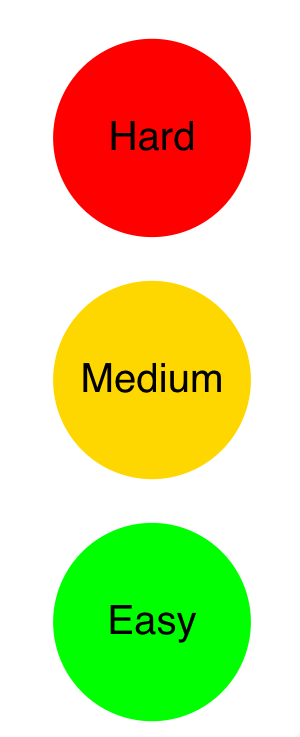

:::: {style="display: flex;"}
::: {} { width=200px } :::
::: {}
\
How do we interpret confidence intervals?
\
How do we compute confidence intervals?
\
Why do we need confidence intervals?
:::
::::
$$ \color{blue}{\text{sample proportion}} \qquad \color{purple}{\text{critical value}} \qquad \qquad \qquad \qquad \qquad \qquad $$
$$ \color{blue}{\hat{\mathbf{p}} } \qquad \pm \qquad \color{purple}{\mathbf{Z}}_{\color{red}{\alpha} / 2} \qquad \times \qquad \sqrt{ \frac{ \color{blue}{\hat{\mathbf{p}} } ( 1 - \color{blue}{\hat{\mathbf{p}} } )}{\color{green}{\mathbf{n}}} } $$
$$ \qquad \qquad \qquad \color{red}{\text{confidence level}} \qquad \color{green}{\textrm{sample size}} $$
Let’s estimate the proportion of women at HKS:
# save values
p <- 26/40
alpha <- 0.05
z <- qnorm(alpha/2, lower.tail = FALSE)
n <- 40
# compute lower and upper bounds of the CI
### <b>
ci.lower <- p - z * sqrt( p*(1-p) / n )
ci.upper <- p + z * sqrt( p*(1-p) / n )
### </b>
print(c(ci.lower, ci.upper))
## [1] 0.5021883 0.7978117
:::: {style="display: flex;"}
::: {} { width=200px } :::
::: {}
Meaning?
“in the long run, 95% of confidence intervals drawn from repeated samples will cover the true value!”
How?
$$ \color{blue}{\hat{\mathbf{p}} } \pm \color{purple}{\mathbf{Z}}_{\color{red}{\alpha} / 2} \times \sqrt{ \frac{ \color{blue}{\hat{\mathbf{p}} } ( 1 - \color{blue}{\hat{\mathbf{p}} } )}{\color{green}{\mathbf{n}}} } $$
Why?
to quantify uncertainty!
:::
::::